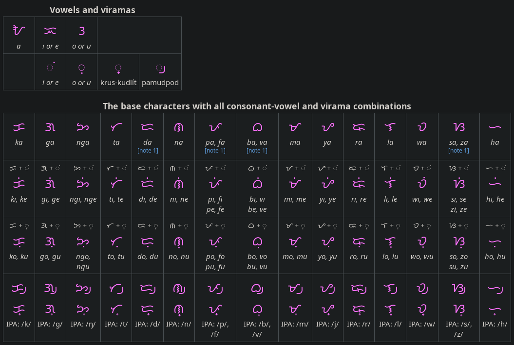
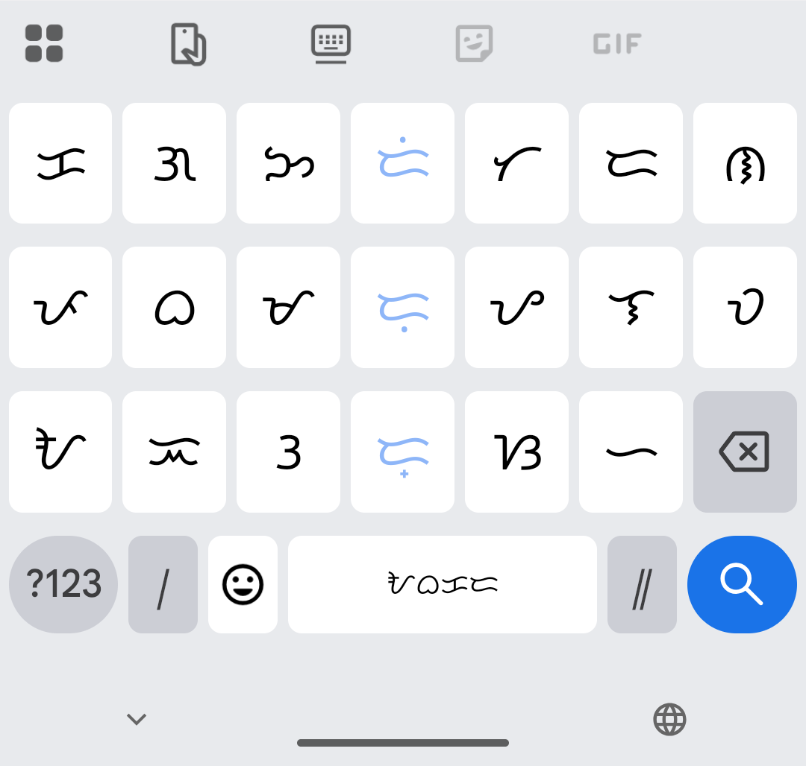

For fun, I implemented an input method to write an abugida writing system called ‘Baybayin’ using a hardware keyboard via the QMK firmware.
A writing system?
Baybayin is an ancient writing system in which a consonant-vowel sequence is generally written as one letter; it is an abugida. For example, the syllable ‘ta’ would be written as one letter, ᜆ. By default, letters have an inherent vowel which is /a/. To indicate a different vowel, a diacritic (kudlit) is added above or below the glyph. So ‘ti’ would be ᜆᜒ and ‘tu’ would be ᜆᜓ.

Chart from Wikipedia
A ‘vowel-killer’ diacritic (virama) is also a common feature — or complication — in abugidas. In Baybayin for example, just ‘t’ would be ᜆ᜕. An example of a full word in Baybayin is ᜆᜆ᜕ᜎᜓ, meaning the number three. (btw, I’m using the <ruby> element to annotate Baybayin symbols in this post, similar to furigana for Japanese.)
There are two variants of the virama (vowel-killer) in Baybayin. ‘t’ could be written as either ᜆ᜔ (with a small cross at the bottom) or ᜆ᜕ (a curved slash). For readability, I'm using the latter variant.
Input design
There are many ways to design an input method for this writing system on a keyboard. One, we could assign every possible symbol combination its own key, given enough keys. But there are 60 total possible combinations. For comparison, the Latin alphabet A-Z only has 26 letters.
Layer or modes could help (hold the Shift or Fn key) — after all, the Latin alphabet actually has 52 total symbols, counting both upper and lowercase.
 In this design, pressing Shift would change the vowel endings.
In this design, pressing Shift would change the vowel endings.
Or we could assign only the base letters (17 keys) and 3 extra keys for diacritics. This would be a pretty efficient layout, and it’s the one used by Google’s mobile keyboard Gboard.

Gboard Baybayin layout
However, both of the above would require learning a whole new keyboard layout, wasting years of Latin alphabet-based muscle memory.
What if I wanted to type in romanised alphabet, like romaji for Japanese or pinyin for Chinese? What if the keyboard can be programmed to convert keystrokes directly into Baybayin outputs? Implementing this on the hardware presents a nice challenge as one keypress would no longer directly correspond to one character.
My solution
I implemented this via QMK running on my keyboard’s hardware. It’s a pretty basic solution, just a bunch of if-elses and variables. Unlike romaji, I don’t need to maintain a buffer or trie or whatever data structure. It only needs to know about the last pressed key. Well, it’s a buffer of length 1.
void on_key_press(uint16_t keycode) {
bool curr_cons = is_consonant(keycode);
bool prev_cons = is_consonant(prev_keycode);
// Special case: N + G => ᜅ
if (prev_keycode == KEYCODE_N && keycode == KEYCODE_G) {
backspace(); // Delete virama
backspace(); // Delete ᜈ / N
send_unicode("ᜅ᜕");
}
// Vowel following consonant: remove virama, maybe add diacritic
else if (!curr_cons && prev_cons) {
backspace(); // Delete virama
if (keycode == KEYCODE_I || keycode == KEYCODE_E) {
send_unicode("ᜒ");
} else if (keycode == KEYCODE_U || keycode == KEYCODE_O) {
send_unicode("ᜓ");
}
// KEYCODE_A emits nothing
}
// Consonant: with virama by default
else if (curr_cons) {
send_unicode(get_baybayin_unicode(keycode));
send_unicode("᜕");
}
// Vowel not after consonant
else {
send_unicode(get_baybayin_unicode(keycode));
}
prev_keycode = keycode;
}
Unicode encoding
The way the Unicode Consortium designed the encoding of the Tagalog (Baybayin) Unicode block made this solution pretty straightforward. The vowel-modifier diacritics are combining characters, which means they can just be outputted separately, right after the base character. Precomposed consonant-vowel symbols aren’t encoded. The word processing application on the computer is what actually renders that sequence of characters as one combined symbol.
ᜆ + ᜕ = ᜆ᜕
In a way, one keypress still corresponds to one output character, except for a few special cases.
Special case: N + G
One special case is the letter ᜅ, representing the consonant /ŋ/. In English this sound is represented by two letters ‘ng’. This romanisation breaks the rule of 1 consonant alphabet letter to 1 Baybayin base letter. For example, ‘ngiti’ (meaning ‘smile’) is written as ᜅᜒᜆᜒ. This special case is solved by backtracking: sending a virtual Backspace signal to the computer to erase the previous N.
Backtracking
Backtracking is a thing because, by default, the virama must always be output after typing a consonant. When the user presses a consonant, we don’t know whether they’re going to stop typing or continue the syllable, at that point. But the base letter has an inherent vowel! Only after the next key is pressed can we be sure but then we may have to backtrack the virama.
Input
Rendered output
Reported sequence with backtracking indicators
This simulation is interactive; you can type your own inputs!
So pressing, say, the T key should not output just the base letter ᜆ, but the letter + virama ᜆ᜕ at once. If you actually press A, a Backspace erases the virama, leaving ᜆ / ‘ta’, and the machine moves on to the next syllable. If you had pressed I, a Backspace erases the virama, and the I vowel diacritic ᜒ is sent, producing ᜆᜒ / ‘ti’.
Because of the inherent vowel in most abugidas, a backtracking design seems to be used in other romanised abugida input methods as well, such as Anjal, a romanised input method for Tamil.
Why not a software IME?
Not that I often need to write Baybayin, but implementing this on the hardware makes it portable. It lives in my keyboard. I could plug my keyboard into any computer that supports arbitrary Unicode input* and not have to install anything.
Can this be generalised to other abugidas?
Baybayin is a relatively simple script.
How does a keyboard even output Unicode?
Technically, it can’t. It requires a certain understanding from the host OS. You know the Alt codes in Windows where you can summon any character by their code number? The keyboard basically types that sequence of keystrokes when we say ‘send unicode’, neatly abstracted into a function call. This abstraction is all done by QMK, supporting Windows, Linux, and Mac’s Unicode input method.
Futher reading
https://www.unicode.org/events/utw/2023/talks/abugida/
https://elangocheran.com/2022/02/14/redesigning-an-input-method-for-an-abugida-script/